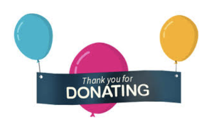

<div class="section home">
        <div class="container ng-scope">
                <div class="col-md-6 col-md-offset-3 container-slide" style="margin-top: 10%;">
                    <i style="color: green; font-size: 50px; padding-left: 40%" class="fas fa-check-circle"></i>
                    <h3 style="padding-left:25%">Donation Complete!!</h3>
                    <br>
                    
                    <br><br>
                    <p style="padding-left:10%" class="lead"><strong>Our volunteers will get in touch with you soon</strong></p>
                    <hr>
                    <button class="btn btn-primary" onclick="redirect('home')">Home</button>
                    <button class="btn btn-primary" onclick="redirect('donate')">Donate Again</button>
        </div>
        </div>
</div>
<style>
    .sucessButton{

    }
</style>
<script>
function redirect(option){
    console.log(window.location);
            let currentLocation = window.location;
            let optionPath="#/";

    switch (option){
        case "home":break;
        case "donate":optionPath+="donate";break;

    }
    console.log(currentLocation.origin+currentLocation.pathname+optionPath)
            window.location = currentLocation.origin+currentLocation.pathname+optionPath

}

</script>
